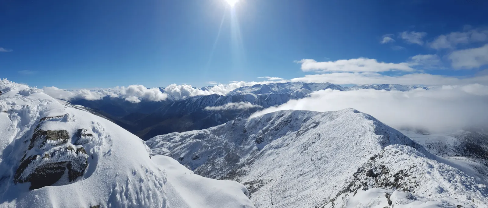
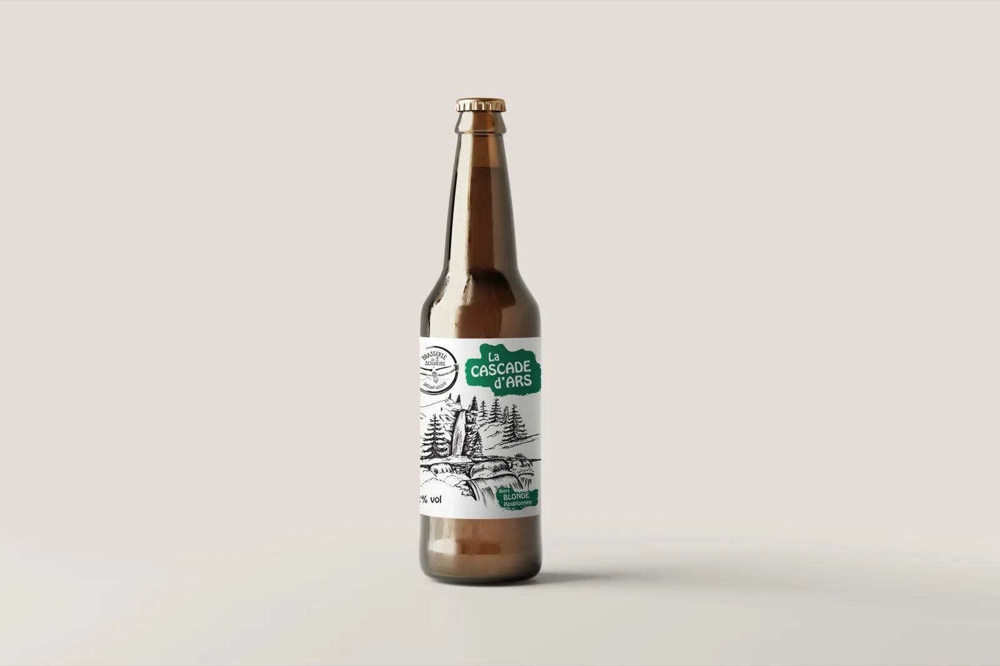
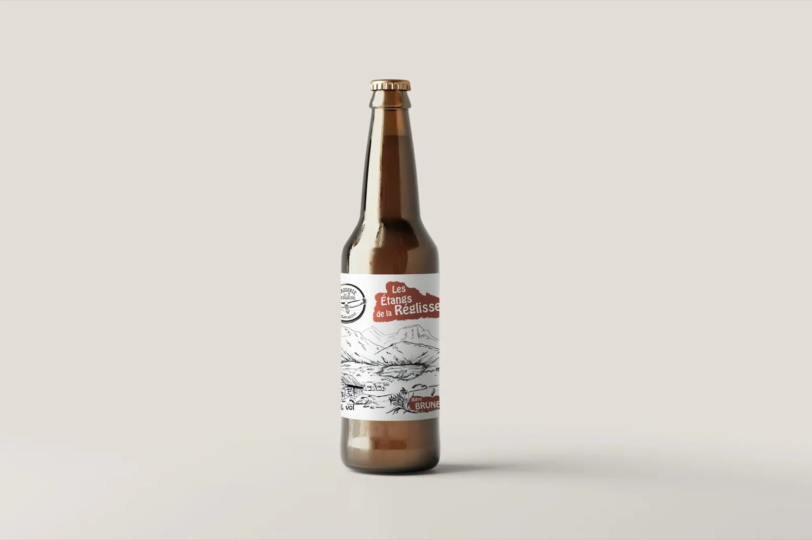
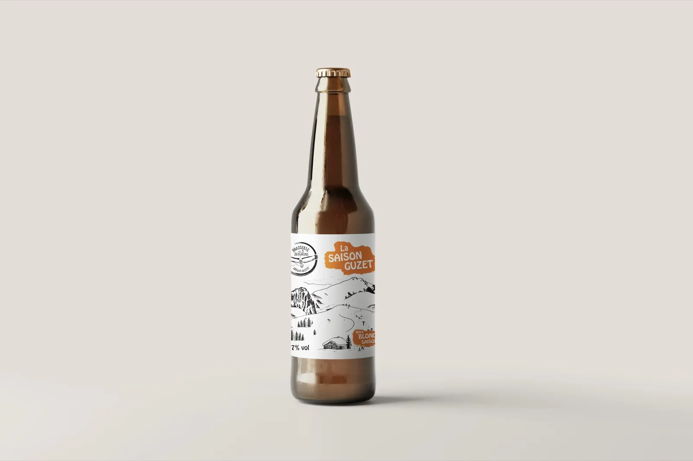
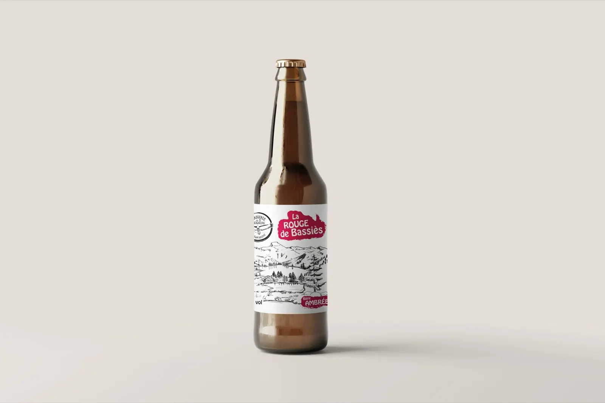
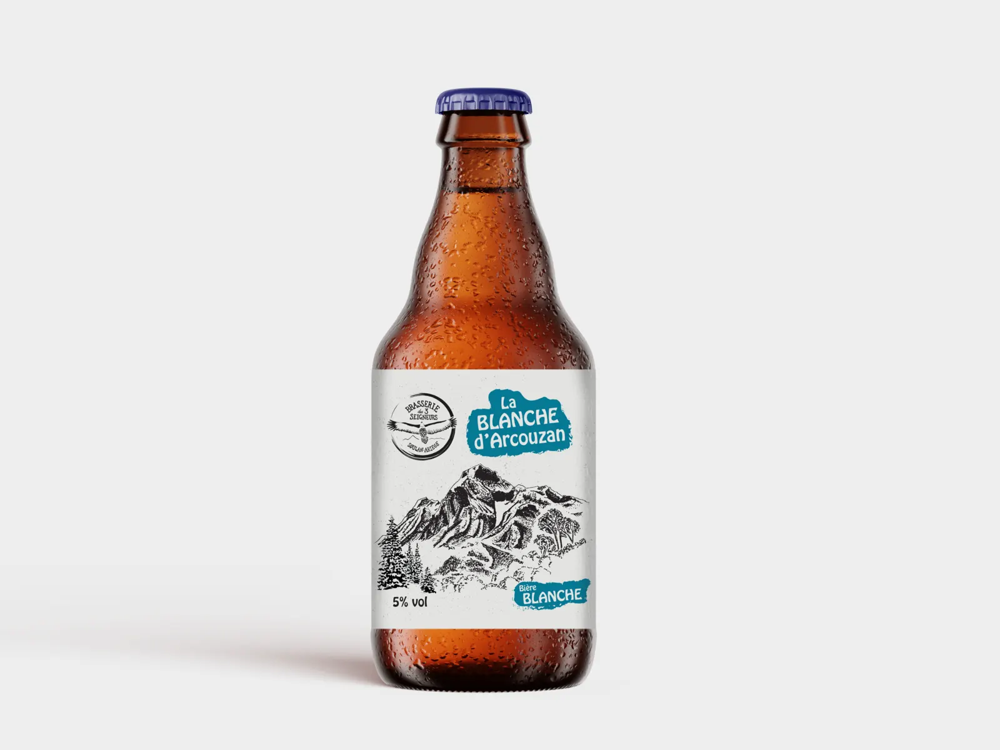
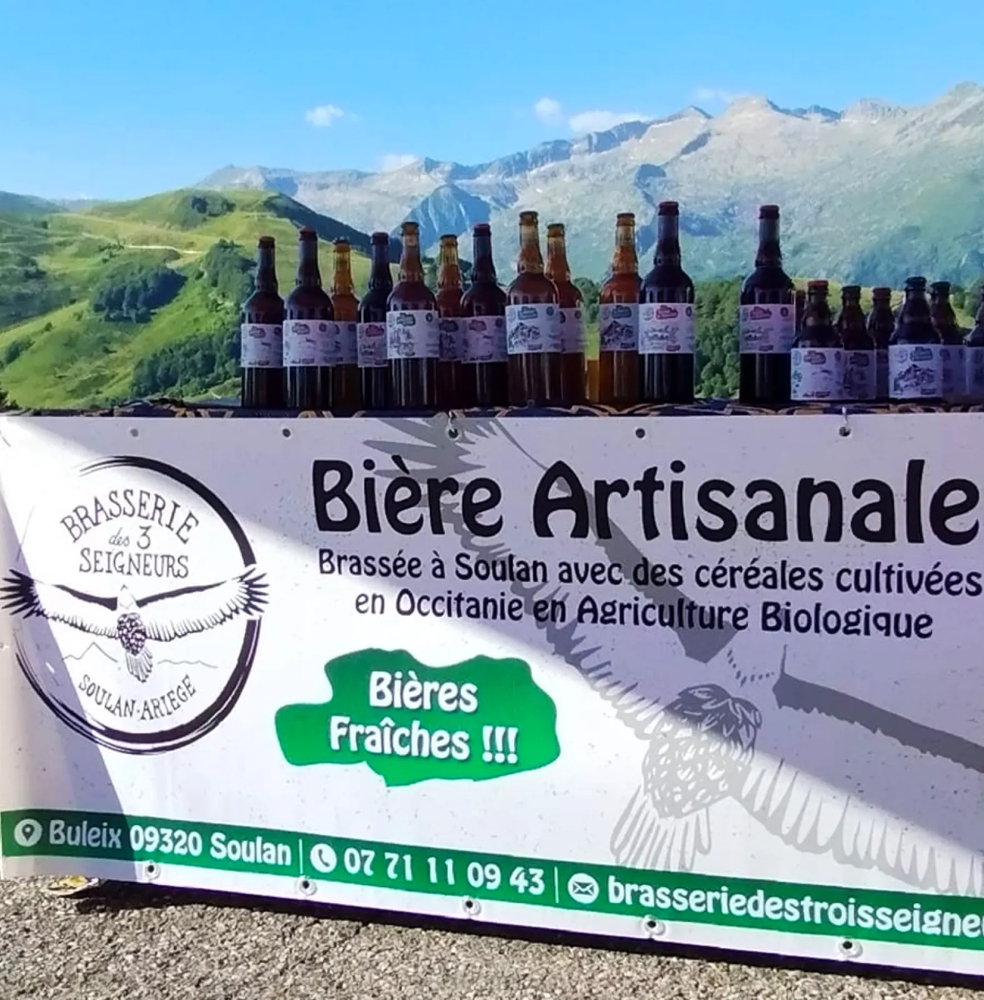
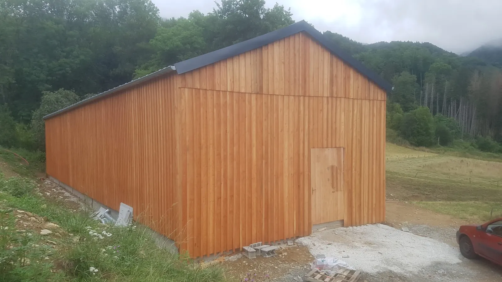

La Cascade d'Ars
Blonde aleBière blonde houblonnée à froid, ronde et légèrement sucrée. Elle exprime le goût fruité et rafraîchissant du houblon Cascade, avec une amertume douce.
75 cl, 5,50 €Voir la fiche

Créée en 2022 à Buleix par Martin Briquet, la brasserie propose des bières authentiques, brassées avec des ingrédients biologiques et de qualité.
Notre collection de bières artisanales
Les bières sont non filtrées, non pasteurisées et fermentées en bouteille : elles présentent un léger dépôt naturel. Bouteille de 75 cl à 5,50 €, bouteille de 33 cl à 2,70 €.





Bière blonde houblonnée à froid, ronde et légèrement sucrée. Elle exprime le goût fruité et rafraîchissant du houblon Cascade, avec une amertume douce.
Bière blonde légère de type allemande, à fermentation basse.
Bière brune dont la racine de réglisse et l'écorce d'orange amère lui apportent subtilement corps et rondeur.
Bière blonde de type saison, aux notes doucement florales grâce à une touche de fleurs de sureau.
Une bière ambrée, brassée avec des malts légèrement torréfiés.
Bière blanche avec une très légère note de citron bergamote.
Ne manquez pas l'occasion de goûter à cette rareté ! Chaque bouteille est un collector, un souvenir à savourer avant qu'il ne devienne inaccessible.
10,00 € le coffret.

Toute l'année, bi-annuels, exceptionnels
Dans la vallée du Salat et à Soulan.
Épiceries, restaurants, bars, cave à vins
Dans la vallée du Salat, mais aussi ailleurs dans le Couserans : les commerces qui les servent ou les vendent.
Qui suis-je ?
Créée en 2022 à Buleix, la Brasserie des Trois Seigneurs, fondée par Martin Briquet à Soulan, est une brasserie artisanale qui allie passion pour le terroir et savoir-faire traditionnel.
Nichée au cœur des Pyrénées, elle propose des bières authentiques, brassées avec des ingrédients biologiques et de qualité. Chaque création est le fruit d'une recherche constante de saveurs uniques.

Buleix, en face de l'égliseÀ Buleix, commune de Soulan : le grand bâtiment en bois en face de l'église. Depuis Saint-Girons, prenez la direction de Massat. À Castet-d'Aleu, dépassez le Paradis Païen et prenez à gauche vers Soulan avant de sortir du hameau. Passez le petit pont, entrez dans Buleix : dans la ligne droite qui monte fort, prenez à droite en vue du grand bâtiment bardé de bois, juste après les dernières maisons.
« À découvrir de toute urgence ! Bières excellentes, brasseur passionné, emplacement superbe ! »
Clem B.
« Super bière en Ariège. J'ai découvert les bières de Martin l'année dernière, elles sont très bonnes ! »
Katy, amatrice de bière